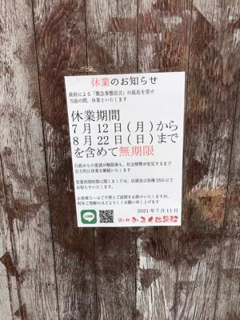
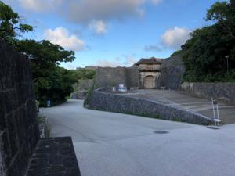
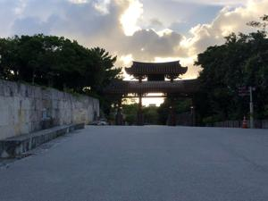
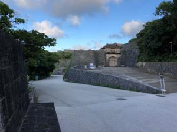
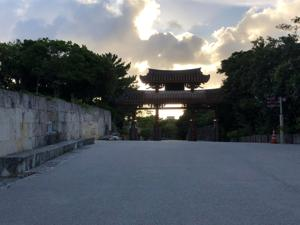

うるがいの話 ある日
最新:
海の日
うるがいとは 前提知識です
カニの画像をクリックすると『うるがいの話』サイトを表示します

|
うるがい(ｳﾙｶﾞｲ urugai)とは、『もずくがに』の名前でとても大きくなります。
|

|
たながー（ﾀﾅｶﾞｰtanagaa）とは手長えびのことで、何種類かあり大きいのは車
エビぐらいになります。
|

|
ぶながー(bunagaa)とは、赤い髪の毛、赤い身体、そして身長は１ｍ２０ｃｍ
ぐらい、川の蟹を食べているの目撃された。場所は沖縄県国頭郡大宜味村のと
ある村僕の隣近所に住んでいる爺さんから、聞いた話です。
|
2021年07月19日 (月）海の日
15:27

 



いつもの年だと「海の日」である。琉球新報のカレンダーだけが７月２２日が
海の日で、日めくりカレンダーの今日は休日だった。世の中の忙しい人達は（
退職したオッサン等は、現役と表現する）以外と知らなったとメルマガや友達
等の情報で分かった。そうか４日後にはオリンピック。仕事したら、寝るだけ
の子供から、先週オリンピックってやるの？と聞かれた。おおお！、ちなみに
パラリンピックのチケットはどうなるのか、かなり前にメールが届いていた。
前回6月の五者協議にて、「パラリンピックについては、オリンピック開会式
の一週間前の7月16日までに方針を決定する。」とご案内差し上げましたが、
先日、7月8に開催された五者協議で、「今後の感染状況等を踏まえて判断する
必要があることから、オリンピックが閉会した後（2021年8月8日以降）にパ
ラリンピックの観客数の取扱いを決めることとする」との方針が示されました。
つきましては、7月16日（金）のご案内を予定しておりました観客の人数上限
ならびに収容率の制限に伴う販売済チケットの抽選結果の公表、ホームプリン
トチケットの発行開始および希望者への払い戻し受付は延期とさせていただき
ます。
恐らく、チケットは届かないだろうな・・・・。風が強い